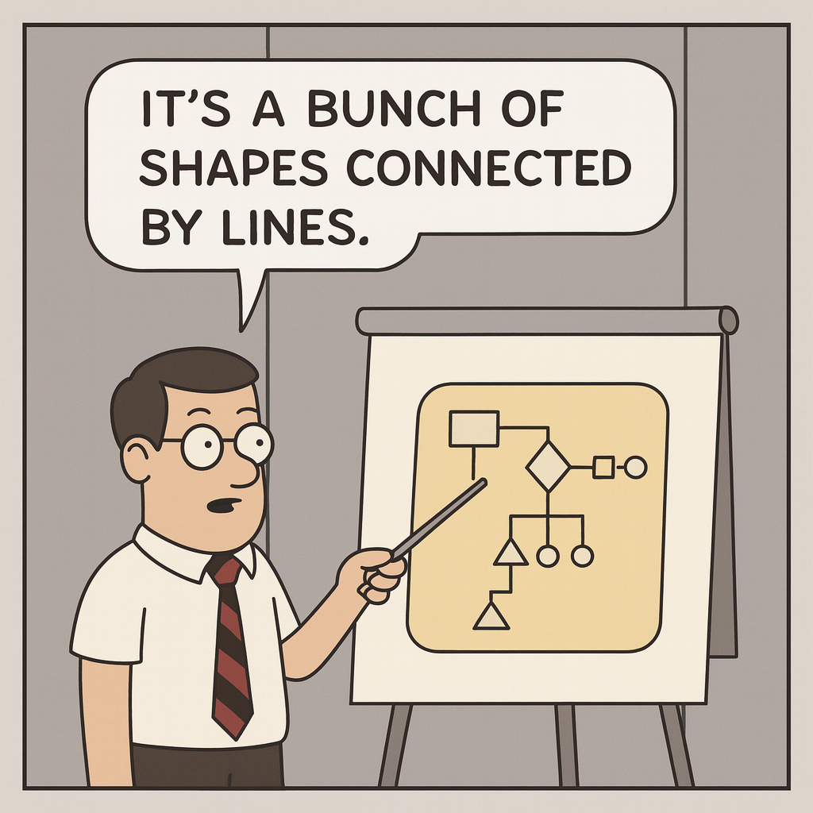

1 Introduction to Modelling
This chapter introduces the principles of modelling in the context of information systems engineering. By the end of this section, you will be able to define what a model is, identify the qualities of a good model, and understand why modelling is an indispensable activity in modern software engineering.
1.0.1 The Central Challenge: Managing Complexity
As software systems become increasingly complex, the primary challenge for engineers is not just writing code, but managing the immense complexity of the systems they build. How do we ensure that a large-scale system is correct, robust, and aligned with user needs before investing thousands of hours in implementation? This is the core problem that modelling addresses.
The following quotes highlight the human-centric and real-world implications of this challenge:
“Concern for man himself and his fate must always form the chief interest of all technical endeavors. […] Never forget this in the midst of your diagrams and equations.”
— Albert Einstein
“In Software Engineering people often believe that a state is a node in a graph and do not even care about what a state means in reality.”
— David L. Parnas
These reflections guide our approach: modelling is not an abstract exercise but a critical tool for building systems that are both technically sound and meaningful in the real world.
1.1 What is Modelling?
In software engineering, “modelling” is often misunderstood and reduced to clichés: drawing diagrams because a process demands it, or simply creating documentation.

In reality, modelling is a rigorous intellectual activity focused on understanding and communicating complex systems.
1.1.1 The Problem Space vs. The Solution Space
A critical distinction in advanced modelling is the separation between two domains:
- The Problem Space: This refers to the real-world environment, with all its complexities, rules, and stakeholders. A model in this space aims to understand and formalize the “what” — what is the problem to be solved?
- The Solution Space: This refers to the computational system we intend to build. A model in this space specifies the “how” — how will our software be structured and behave to solve the problem?
Effective modelling involves creating a clear and verifiable bridge between these two spaces.
1.1.2 A More Formal Definition
According to Jeff Rothenberg, a model is a simplification of reality that allows us to reason about the world in a more manageable way. Building on this, we can define a model as:
- A simplification of a real or imagined reality…
- …that captures its essential properties…
- …to help us understand and reason about it…
- …for a specific cognitive purpose (e.g., analysis, simulation, code generation).
A good model must not only be an abstraction but also possess qualities of the original system, allowing us to perform meaningful analysis and make predictions about the system’s behaviour.
1.2 The Role of Models in Engineering
In any engineering discipline, building a complex system without prior modelling is unthinkable. Before investing significant resources, engineers create and learn from models to manage complexity and ensure the final product meets its requirements. In software engineering, models serve three critical roles throughout the development lifecycle:
1.2.1 Models for Analysis (Understanding the Problem)
Models are first and foremost tools for thought and communication. They help us analyze the problem space by:
- Clarifying Requirements: Translating ambiguous client needs into a precise, structured representation that can be discussed and validated.
- Exploring the Domain: Capturing the essential concepts, rules, and relationships of the business domain, ensuring the development team shares a common understanding.
1.2.2 Models for Synthesis (Designing the Solution)
Once the problem is understood, models guide the design of the solution space. They serve as blueprints for construction, helping to:
- Architect the System: Defining the high-level structure, components, and interactions of the software.
- Plan Development: Providing a clear plan for implementation, allowing for better task allocation and project management.
1.2.3 Models for Validation (Mitigating Risks)
Finally, models allow us to validate our design choices before writing a single line of production code, thereby mitigating risks. This can be done through:
- Simulations and Walkthroughs: “Executing” the model mentally or with tools to identify logical flaws or unintended consequences.
- Formal Verification: Applying mathematical techniques to prove that a model satisfies certain critical properties (e.g., security, safety).
1.3 The Spectrum of Modelling Languages
To describe an information system, engineers use various languages that fall along a spectrum, balancing the trade-off between intuitive expressiveness and formal precision. Choosing the right language depends on the context, the audience, and the goals of the model.
1.3.1 Informal Languages
These languages prioritize ease of communication and are accessible to all stakeholders, including non-technical clients.
1.3.1.1 Natural Language (e.g., English, French)
Natural language is the default for initial requirements gathering.
- Strengths: Universally understood, requires no special training.
- Weaknesses: Highly prone to what are known as the “7 deadly sins” of specification: ambiguity, contradiction, vagueness, noise (irrelevant information), silence (missing information), over-specification, and wishful thinking. These issues make it unsuitable for detailed and rigorous system design.
1.3.1.2 Ad-hoc Notations (e.g., whiteboard sketches)
These are informal diagrams drawn without strict rules.
- Strengths: Excellent for brainstorming and collaborative sessions; highly flexible and fast to create.
- Weaknesses: Lacks a well-defined syntax and semantics. The meaning of a symbol can be interpreted differently by each person, leading to significant ambiguity and making it impossible to automate any analysis.
1.3.2 Formal and Semi-Formal Languages
As we move toward implementation, the need for precision increases, requiring languages with well-defined rules.
1.3.2.1 Semi-Formal Notations (e.g., UML)
This is the dominant category in modern software engineering. UML (Unified Modelling Language) is the industry standard.
- Strengths: Provides a well-defined visual syntax that is more intuitive than purely formal languages. It offers a partial common interpretation (semantics) and supports partial automation, such as code generation and model checking. The learning curve is relatively fast.
- Weaknesses: While the syntax is standardized, UML’s semantics can sometimes remain ambiguous, leaving room for interpretation in complex scenarios.
1.3.2.2 Formal Notations (e.g., Z, VDM, Alloy)
These languages are based on mathematical principles, providing the highest level of precision.
- Strengths: Possess a well-defined syntax and an unambiguous mathematical semantics. This rigor eliminates ambiguity and allows for extensive automation, including formal verification and proof of correctness.
- Weaknesses: Their mathematical nature makes them difficult for non-experts to read and requires a significant learning investment. They are typically used for safety-critical or mission-critical systems where absolute correctness is paramount.
1.3.3 Summary Comparison
| Language Type | Syntax | Semantics | Ambiguity | Tool Support |
|---|---|---|---|---|
| Natural Language | Undefined | Informal | Very High | Low |
| Ad-hoc | Undefined | Informal | High | Very Low |
| Semi-Formal (UML) | Defined | Partially Formal | Low | High |
| Formal (Z, VDM) | Defined | Formal | Very Low | Very High |
1.4 Qualities of a Good Model
To be effective, a model must be more than just a picture; it must possess specific qualities that make it useful for its intended purpose. The famous statistician George E.P. Box aptly noted:
“Essentially, all models are wrong, but some are useful.”
— George E.P. Box
The usefulness of a model can be evaluated across three distinct dimensions: its syntax, its semantics, and its pragmatics.
1.4.1 Syntactic Quality: Is the Model Well-Formed?
This dimension concerns the structure and comprehensibility of the model itself, independent of what it represents.
- Understandable: The model must use a notation that is clear and intuitive for its intended audience, whether they are domain experts, developers, or clients. A model that cannot be easily understood fails its primary purpose of communication.
1.4.2 Semantic Quality: Does the Model Represent Reality Faithfully?
This is about the relationship between the model and the system it represents. The goal is to ensure the model is a truthful representation.
- Abstract: A model must be an effective abstraction, focusing on the essential aspects of the system while intentionally omitting irrelevant details. This is the primary mechanism for managing complexity.
- Precise: Precision is a measure of how faithfully the model reflects reality. It encompasses several sub-qualities:
- Correctness: The model does not contain any information that is false with respect to the system.
- Completeness: The model includes all relevant information for its purpose.
- Lack of Ambiguity: The statements made by the model have one and only one interpretation.
1.4.3 Pragmatic Quality: Is the Model Useful for its Purpose?
This dimension evaluates the model’s utility in practice. A model can be well-formed and accurate but still be useless if it doesn’t serve its purpose.
- Predictive: The model must allow us to deduce non-trivial properties about the system it represents. It should be a tool for analysis and reasoning, helping us answer “what if” questions.
- Inexpensive: The cost of creating, analyzing, and maintaining the model must be significantly lower than the cost of experimenting with the actual system. If the model is as complex or expensive as the system itself, it loses its pragmatic value.